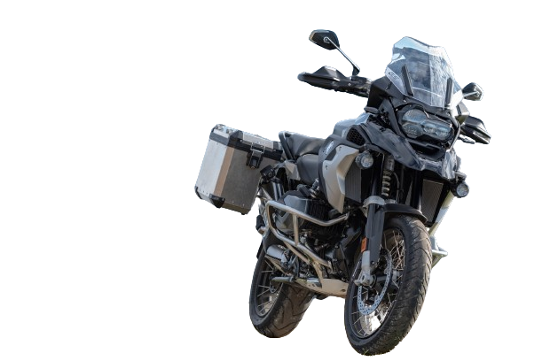
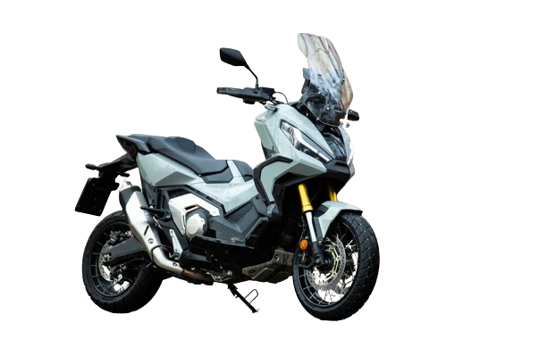
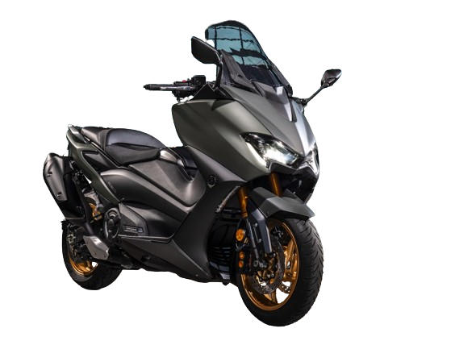

Une gamme de scooter, modifier par les soins de M.RAMZ, le virtuose du DEUX ROUES.

VOICI LE GS ELITE, LE GS LE PLUS PERFORMANT DE SA GENERATION
EXCLUSIF, PUISSANT, MONTANT JUSQUA 250 kmh, DU GRAND RENOUVEAU POUR GS
RETROUVER LES INFORMATION COMPLEMENTAIRE DANS LA SECTION "NOUS CONTACTER".
GS ELITE

VOICI LE X-ADV MAX, LE GS LE PLUS PERFORMANT DE SA GENERATION
EXCLUSIF, PUISSANT, MONTANT JUSQUA 220 kmh, DU GRAND RENOUVEAU POUR GS
RETROUVER LES INFORMATION COMPLEMENTAIRE DANS LA SECTION "NOUS CONTACTER".
X-ADV MAX

VOICI LE TMAX PREMIUM, LE GS LE PLUS PERFORMANT DE SA GENERATION
EXCLUSIF, PUISSANT, MONTANT JUSQUA 300 kmh, DU GRAND RENOUVEAU POUR GS
RETROUVER LES INFORMATION COMPLEMENTAIRE DANS LA SECTION "NOUS CONTACTER".